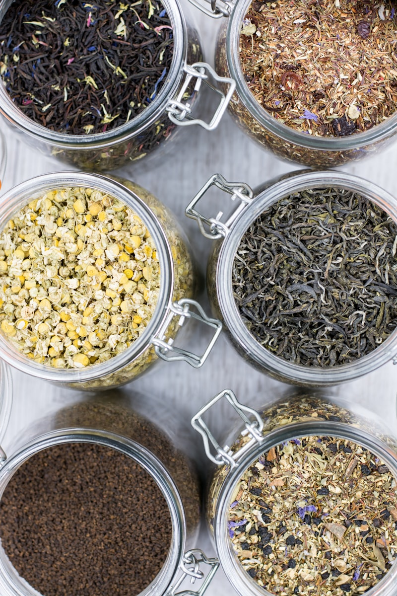
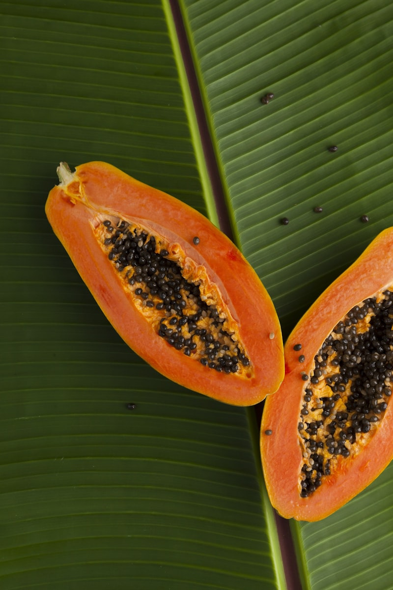
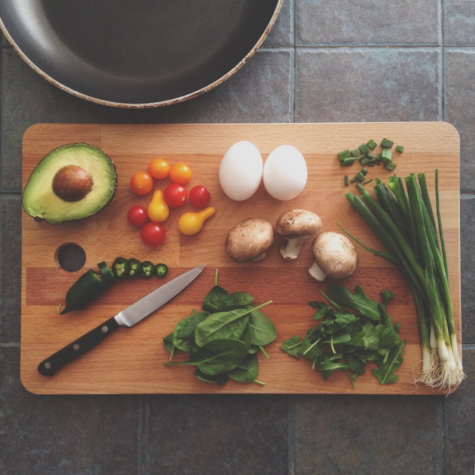

Limpia Tu Cuerpo, Libera Tu Metabolismo
Tu intestino es tu segundo cerebro. Cuando está cargado de toxinas, parásitos o hongos, tu metabolismo se frena, tu energía baja y tu equilibrio hormonal se desestabiliza.
Esta guía te enseña a identificar las señales de que tu cuerpo necesita una limpieza, y te da remedios naturales seguros para hacerla desde tu cocina.
🔍 **Identifica las señales** de acumulación de toxinas
🌿 **Remedios naturales** con ingredientes que ya tienes
🥥 **Protocolo anti-cándida** con aceite de coco
📅 **Plan de limpieza de 7 días** paso a paso
⚠️ **Precauciones importantes** para hacerlo de forma segura
⚠️ Esta guía es un complemento natural. Si sospechas de una infección severa o tienes síntomas graves, consulta siempre a tu médico. Los remedios naturales apoyan tu bienestar, no reemplazan el tratamiento médico.

¿Por Qué Tu Cuerpo Necesita una Limpieza?
Entiende cómo las toxinas, parásitos y hongos afectan tu metabolismo hormonal y qué señales te envía tu cuerpo.

- ⚠️ METALES PESADOS — Mercurio, plomo y arsénico se acumulan por exposición ambiental, alimentos contaminados y empastes dentales. Sobrecargan el hígado y dificultan el procesamiento de hormonas
- 🪱 PARÁSITOS — Organismos que viven en tu intestino alimentándose de tus nutrientes. Causan fatiga, problemas digestivos, dolor articular y antojos de azúcar. Más comunes de lo que crees
- 🍄 CÁNDIDA — Hongo que vive naturalmente en tu cuerpo pero puede crecer en exceso cuando hay desbalance hormonal, estrés o consumo excesivo de azúcar. Causa infecciones recurrentes, niebla mental y antojos intensos
- 🔗 CONEXIÓN CON TU EQUILIBRIO HORMONAL:
- 🔸 Las toxinas sobrecargan el hígado — el mismo órgano que procesa tus hormonas (estrógeno, insulina, cortisol).
- 🔸 Los parásitos roban nutrientes que tu cuerpo necesita para producir hormonas correctamente.
- 🔸 La cándida produce acetaldehído, una sustancia que cruza la barrera cerebral y causa niebla mental.
- 🔸 La inflamación intestinal crónica aumenta la resistencia a la insulina.
- 🔸 Un intestino limpio absorbe mejor los nutrientes = hormonas mejor reguladas.

- Responde SÍ o NO a cada pregunta:
- 1️⃣ ¿Sientes fatiga crónica o cansancio inexplicable, incluso durmiendo bien?
- 2️⃣ ¿Tienes problemas digestivos frecuentes (hinchazón, gases, estreñimiento, diarrea)?
- 3️⃣ ¿Sufres antojos intensos de azúcar o carbohidratos refinados?
- 4️⃣ ¿Tienes niebla mental, dificultad para concentrarte o problemas de memoria?
- 5️⃣ ¿Experimentas infecciones por hongos recurrentes?
- 6️⃣ ¿Tienes problemas de piel (erupciones, picazón, enrojecimiento)?
- 7️⃣ ¿Sientes dolor en articulaciones o músculos sin causa aparente?
- 8️⃣ ¿Has tomado antibióticos recientemente o con frecuencia?
- 📊 RESULTADOS:
- 0-2 respuestas SÍ → Tu cuerpo está relativamente limpio. Haz una limpieza preventiva 1-2 veces al año.
- 3-5 respuestas SÍ → Es probable que tengas acumulación de toxinas. El plan de 7 días te beneficiará mucho.
- 6-8 respuestas SÍ → Tu cuerpo está pidiendo ayuda. Sigue el plan completo y considera consultar a un profesional.
- 💡 Muchos de estos síntomas se confunden con 'cansancio normal' o 'estrés' — pero pueden ser señales de que tu intestino necesita atención.
Remedios Naturales para Desparasitar
5 recetas con ingredientes naturales que eliminan parásitos, hongos y toxinas de forma segura desde tu cocina.
- 2 cucharadas de semillas de calabaza crudas
- 1 vaso de agua o jugo verde (sin azúcar)
- Tuesta ligeramente las semillas en un sartén seco (sin aceite) por 2-3 minutos.
- Tritúralas hasta obtener un polvo fino (puedes usar licuadora o mortero).
- Mezcla 1 cucharada del polvo en un vaso de agua o jugo verde.
- Toma en ayunas cada mañana durante 7-10 días consecutivos.

- 1 trozo de jengibre fresco (2-3 cm)
- ½ vaso de agua tibia
- Jugo de ½ limón (opcional)
- Ralla o exprime el jengibre fresco para obtener su jugo.
- Mezcla con el agua tibia.
- Agrega el limón si deseas (potencia el efecto).
- Bebe de un solo trago cada mañana en ayunas, 5-7 días seguidos.

- 2-3 clavos de olor enteros
- 1 taza de agua (250 ml)
- 1 ramita de canela (opcional, mejora el sabor)
- Hierve el agua y agrega los clavos de olor.
- Si deseas, añade la canela.
- Cocina a fuego bajo por 5 minutos.
- Cuela y bebe después de las comidas, 1-2 veces al día durante 5 días.

- 3-4 dientes de ajo fresco pelados
- 1 frasco de vidrio con tapa
- Agua suficiente para cubrir los ajos
- Pela los dientes de ajo y colócalos en el frasco de vidrio.
- Cúbrelos completamente con agua.
- Tapa el frasco y déjalo en un lugar fresco y oscuro por 3-4 días.
- Consume 1 diente de ajo fermentado cada mañana en ayunas durante 7 días.

- 1 cucharadita de semillas de papaya (frescas o secas)
- 1 taza de agua
- Jugo de ½ limón (opcional)
- Coloca las semillas de papaya en la licuadora con el agua.
- Licúa hasta obtener una mezcla homogénea.
- Agrega limón si deseas.
- Bebe en ayunas por la mañana, 5-7 días consecutivos.

Protocolo Anti-Cándida con Aceite de Coco
Un protocolo de 30 días con aceite de coco extra virgen para combatir el sobrecrecimiento de cándida de forma natural.

- 🥥 Aceite de coco EXTRA VIRGEN (asegúrate que sea extra virgen, no refinado)
- 📅 Duración: 30 días continuos
- 📈 SEMANA 1: 1 cucharadita de postre al día (mañana)
- 📈 SEMANA 2: 1 cucharada al día (mañana)
- 📈 SEMANA 3: 1 cucharada mañana + 1 cucharadita tarde
- 📈 SEMANA 4: 1 cucharada mañana + 1 cucharada tarde
- 💡 CÓMO TOMARLO:
- 🔸 Puedes tomarlo solo (dejándolo derretir en la boca) o mezclarlo con una infusión caliente.
- 🔸 Tómalo 15 minutos antes de comer para mayor absorción.
- 🔸 Si sientes malestar estomacal, reduce la dosis y sube más lentamente.
- 🔸 Guarda el aceite a temperatura ambiente — se solidifica en frío pero sigue siendo igual de efectivo.
- 🔸 También puedes usarlo para cocinar tus alimentos (reemplaza otros aceites).

- ✅ ALIADOS ANTI-CÁNDIDA: Ajo, cebolla, jengibre, cúrcuma, aceite de coco, vinagre de manzana, vegetales verdes, proteínas magras, yogur natural (probióticos)
- ✅ ESPECIAS ANTIFÚNGICAS: Orégano, tomillo, romero, canela, clavo de olor
- ❌ ALIMENTOS QUE ALIMENTAN LA CÁNDIDA: Azúcar (en todas sus formas), pan blanco, harinas refinadas, alcohol, frutas muy dulces en exceso, lácteos procesados, alimentos fermentados con levadura
- 📋 REGLAS DURANTE EL PROTOCOLO:
- 🔸 Elimina el azúcar refinado completamente — la cándida se alimenta de azúcar.
- 🔸 Reduce carbohidratos refinados (pan blanco, pasta, arroz blanco).
- 🔸 Incluye 1-2 dientes de ajo crudo al día (puedes picarlos y tragarlos con agua).
- 🔸 Come yogur natural sin azúcar (los probióticos compiten con la cándida por espacio).
- 🔸 Bebe 2+ litros de agua al día para ayudar a tu cuerpo a eliminar toxinas.

Plan de Limpieza de 7 Días
Un plan día a día que combina los remedios naturales en una secuencia efectiva y segura.

- 🌅 EN AYUNAS: Shot de jengibre con limón + 1 cucharadita aceite de coco
- 🍳 DESAYUNO (30 min después): Huevos con vegetales y aguacate (sin pan)
- 💧 DURANTE EL DÍA: Mínimo 2.5 litros de agua con limón
- 🍽️ ALMUERZO: Proteína magra + vegetales verdes + aceite de oliva
- 🫖 DESPUÉS DEL ALMUERZO: Infusión de clavo de olor con canela
- 🌙 CENA: Sopa de vegetales con ajo y cúrcuma (ligera, fácil de digerir)
- ❌ ELIMINAR estos 3 días: Azúcar, pan, harinas, alcohol, lácteos procesados
- 📝 NOTAS IMPORTANTES PARA DÍAS 1-3:
- 🔸 Es normal sentir algo de cansancio o dolor de cabeza — tu cuerpo está eliminando toxinas.
- 🔸 Bebe MÁS agua de lo normal — ayuda a eliminar lo que tu cuerpo está soltando.
- 🔸 Come suficiente — no es una dieta de hambre, es una limpieza. Proteína y vegetales libremente.
- 🔸 Evita ejercicio intenso estos días — caminata suave está bien.
- 🔸 Duerme lo que necesites — tu cuerpo trabaja durante el sueño.

- 🌅 EN AYUNAS: 1 cucharada de semillas de calabaza molidas + 1 cucharadita aceite de coco
- 🍳 DESAYUNO (30 min después): Avena con canela y nueces (sin azúcar)
- 💧 DURANTE EL DÍA: 2.5 litros de agua + infusión de jengibre fría
- 🍽️ ALMUERZO: Pollo o pescado con ensalada grande y ajo crudo picado
- 🫖 DESPUÉS DEL ALMUERZO: Infusión de clavo de olor
- 🧄 ANTES DE CENAR: 1 diente de ajo fermentado (si ya preparaste el frasco)
- 🌙 CENA: Vegetales salteados con cúrcuma y aceite de coco
- 📝 NOTAS PARA DÍAS 4-5:
- 🔸 Para este punto, los antojos de azúcar deberían estar disminuyendo.
- 🔸 Tu digestión puede estar cambiando — es normal ir más al baño o tener gases.
- 🔸 Tu energía puede empezar a mejorar gradualmente.
- 🔸 Sigue bebiendo mucha agua — la hidratación es CLAVE para la eliminación.
- 🔸 Puedes hacer ejercicio suave si te sientes con energía.

- 🌅 EN AYUNAS: Licuado de semillas de papaya con limón + 1 cucharadita aceite de coco
- 🍳 DESAYUNO: Yogur natural sin azúcar con semillas de chía y canela (probióticos para repoblar)
- 💧 DURANTE EL DÍA: 2 litros de agua + agua de limón con menta
- 🍽️ ALMUERZO: Proteína magra + vegetales variados + aguacate
- 🫖 DESPUÉS DEL ALMUERZO: Infusión de manzanilla con cúrcuma (calma y desinflama)
- 🌙 CENA: Sopa de pollo con vegetales, ajo y jengibre
- ✅ REINTRODUCE gradualmente: Frutas de bajo IG, legumbres, granos integrales
- 📝 NOTAS PARA DÍAS 6-7:
- 🔸 El yogur natural introduce probióticos que repueblan tu flora intestinal con bacterias buenas.
- 🔸 No reintroduzcas azúcar refinado — tu cuerpo está limpio, no lo contamines de nuevo.
- 🔸 Deberías sentir: más energía, menos hinchazón, mejor digestión, menos antojos.
- 🔸 Toma nota de cómo te sientes — compara con el día 1.
- 🔸 Después del día 7, continúa con el protocolo de aceite de coco por 23 días más.

Prevención y Estilo de Vida Limpio
Hábitos diarios para mantener tu intestino limpio, tu flora equilibrada y tu metabolismo funcionando al máximo.

- 1️⃣ Lava bien frutas y vegetales antes de consumir (usa vinagre de manzana en el agua de lavado)
- 2️⃣ Cocina bien las carnes y pescados — nunca los comas crudos o medio crudos
- 3️⃣ Bebe agua filtrada o hervida — evita agua de fuentes no seguras
- 4️⃣ Incluye ajo, cúrcuma y jengibre en tu cocina diaria como especias antiparasitarias naturales
- 5️⃣ Come yogur natural sin azúcar 3-4 veces por semana (probióticos naturales)
- 6️⃣ Reduce el azúcar refinado al mínimo — es el alimento favorito de parásitos y cándida
- 7️⃣ Come fibra suficiente (vegetales, legumbres, avena) para mantener el tránsito intestinal activo
- 8️⃣ Lávate las manos frecuentemente, especialmente antes de comer y después del baño
- 9️⃣ Desparasita a tus mascotas regularmente — son fuente común de parásitos
- 🔟 Haz el plan de 7 días cada 3-4 meses como mantenimiento preventivo
- 🧼 LIMPIEZA DE FRUTAS Y VEGETALES:
- 🔸 Llena un recipiente con agua y agrega 2 cucharadas de vinagre de manzana.
- 🔸 Sumerge frutas y vegetales por 10-15 minutos.
- 🔸 Enjuaga con agua limpia y seca.
- 🔸 Este simple paso elimina pesticidas, bacterias y huevos de parásitos de la superficie.
- 🔸 Especialmente importante en: fresas, lechuga, espinaca, apio y hierbas frescas.